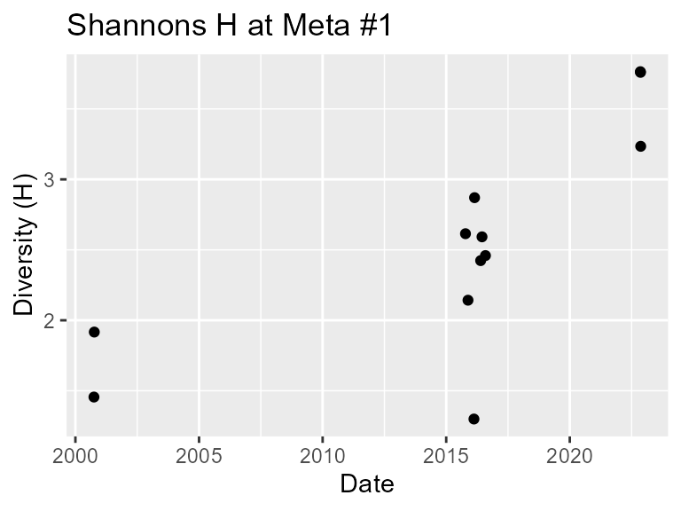
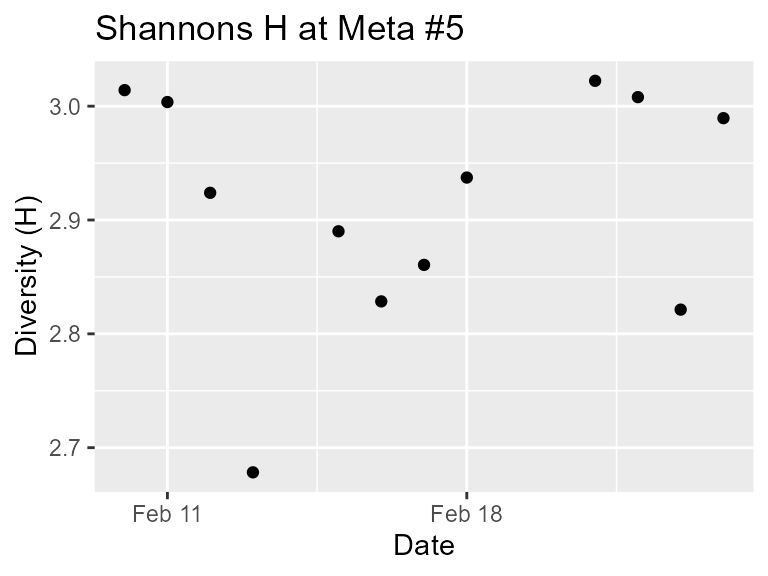
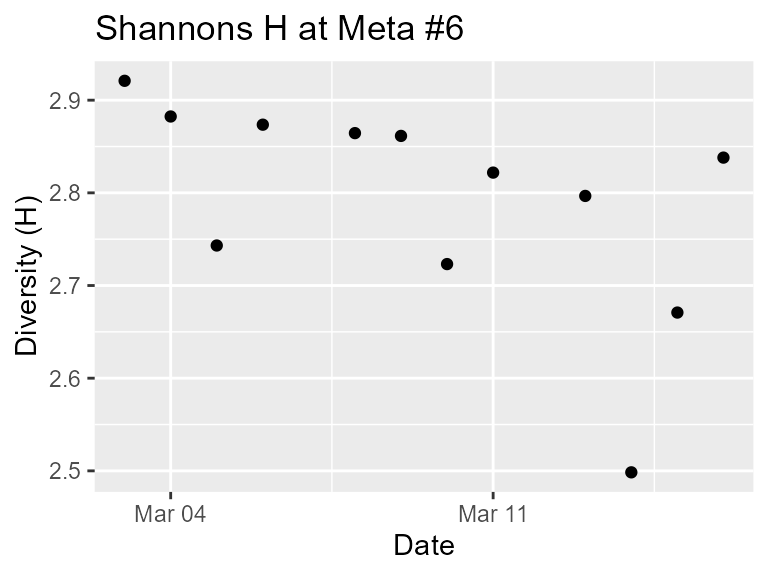
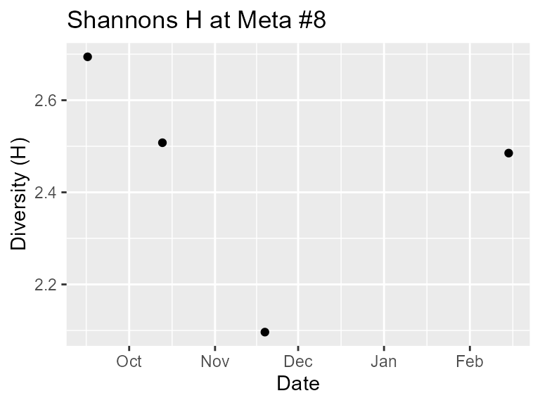

Auto-grouping and charting
Group_Sites.Rmd
library(DivInsight)
library(dplyr)
#>
#> Attaching package: 'dplyr'
#> The following objects are masked from 'package:stats':
#>
#> filter, lag
#> The following objects are masked from 'package:base':
#>
#> intersect, setdiff, setequal, union
data("Colombia")To gain a more detailed insight of the diversity in a large area the
group_radius argument can be used in the
clusterise_sites() function to automatically group sites
together by specifying a radius in metres.
A label is assigned to each site denoting which group it belongs to.
This label can be seen in the site_group column in the
cluster dataframe.
# subset the dataframe by province name
Colombia_Meta <- subset(Colombia, stateProvince == "Meta")
# cluster occurrence data by date and generate centred coordinates for each site
clusterised_Meta_20km_groups <- clusterise_sites(
dataframe = Colombia_Meta,
cluster_min_length = 30,
group_radius = 20000
)
# view the information for each site/cluster
print(clusterised_Meta_20km_groups[[2]])
#> longitude latitude site_group date
#> 1 -73.46702 4.058576 1 2000-10-01
#> 2 -73.46702 4.058576 1 2000-10-06
#> 3 -73.47267 4.073333 1 2015-10-13
#> 4 -73.47267 4.073333 1 2015-11-19
#> 5 -73.47267 4.073333 1 2016-02-15
#> 6 -73.47267 4.073333 1 2016-02-24
#> 7 -73.47267 4.073333 1 2016-05-24
#> 8 -73.47267 4.073333 1 2016-06-13
#> 9 -73.47267 4.073333 1 2016-08-03
#> 10 -73.36824 4.083131 1 2022-11-09
#> 11 -73.38409 4.080567 1 2022-11-11
#> 12 -73.37865 4.091503 1 2022-11-14
#> 13 -71.71407 4.322192 4 2012-05-01
#> 14 -72.96847 4.295741 5 2013-02-10
#> 15 -72.96847 4.295741 5 2013-02-11
#> 16 -72.96847 4.295741 5 2013-02-12
#> 17 -72.96847 4.295741 5 2013-02-13
#> 18 -72.97906 4.287842 5 2013-02-15
#> 19 -72.97054 4.288258 5 2013-02-16
#> 20 -72.97906 4.287842 5 2013-02-17
#> 21 -72.97466 4.285456 5 2013-02-18
#> 22 -72.96518 4.273713 5 2013-02-21
#> 23 -72.96660 4.272737 5 2013-02-22
#> 24 -72.96733 4.273370 5 2013-02-23
#> 25 -72.97047 4.275363 5 2013-02-24
#> 26 -72.96566 4.458016 6 2013-03-03
#> 27 -72.96566 4.458016 6 2013-03-04
#> 28 -72.96566 4.458016 6 2013-03-05
#> 29 -72.96566 4.458016 6 2013-03-06
#> 30 -72.96038 4.401621 6 2013-03-08
#> 31 -72.96413 4.403583 6 2013-03-09
#> 32 -72.96038 4.401621 6 2013-03-10
#> 33 -72.96038 4.401621 6 2013-03-11
#> 34 -72.97800 4.445970 6 2013-03-13
#> 35 -72.97800 4.445970 6 2013-03-14
#> 36 -72.97800 4.445970 6 2013-03-15
#> 37 -72.97800 4.445970 6 2013-03-16
#> 38 -71.81433 4.530222 8 2015-09-16
#> 39 -71.81433 4.530222 8 2015-10-13
#> 40 -71.81433 4.530222 8 2015-11-19
#> 41 -71.81433 4.530222 8 2016-02-15
#> 42 -73.89669 3.798917 9 2015-11-19
#> 43 -73.90230 3.799197 9 2016-02-20
#> 44 -73.58081 4.077551 10 2016-03-21
#> 45 -73.61314 4.094075 10 2016-04-12
#> 46 -72.02722 4.171914 11 2017-05-22
#> 47 -73.40181 3.531730 12 2017-08-28
#> 48 -73.40181 3.531730 12 2019-04-08
#> 49 -71.43081 3.814218 13 2021-06-26
#> 50 -71.39631 3.821191 13 2021-06-27
#> 51 -71.52242 3.857269 13 2021-06-29
#> 52 -73.58722 3.884813 14 2021-07-07Base R commands can be used to see how many sites there are in each group and help us decide which group(s) to examine further.
# use table() and sort() to see how many sites there are in each group
clusterised_Meta_20km_groups[[2]]$site_group %>% table %>% sort %>% print
#> .
#> 4 11 14 9 10 12 13 8 1 5 6
#> 1 1 1 2 2 2 3 4 12 12 12Here we choose to examine sites 1, 5, 6, and 8 further by using
filter_groups_by_number() to store each group’s data then
plot using plot_sites_scatter_H().
# store the data for each group
Colombia_Meta_1 <- filter_groups_by_number(clusterised_Meta_20km_groups, 1)
Colombia_Meta_5 <- filter_groups_by_number(clusterised_Meta_20km_groups, 5)
Colombia_Meta_6 <- filter_groups_by_number(clusterised_Meta_20km_groups, 6)
Colombia_Meta_8 <- filter_groups_by_number(clusterised_Meta_20km_groups, 8)
# plot the data in a scatter plot
plot_sites_scatter_H(Colombia_Meta_1, main = "Shannons H at Meta #1")
#> Warning: Use of `stats_dataframe$date` is discouraged.
#> ℹ Use `date` instead.
#> Warning: Use of `stats_dataframe$H` is discouraged.
#> ℹ Use `H` instead.
plot_sites_scatter_H(Colombia_Meta_5, main = "Shannons H at Meta #5")
plot_sites_scatter_H(Colombia_Meta_6, main = "Shannons H at Meta #6")
plot_sites_scatter_H(Colombia_Meta_8, main = "Shannons H at Meta #8") 
The charts show varying patterns of diversity over available time frames but it is important to know where these changes are taking place.
map_start() can be used to create a new map object and
map_add() can be used to add coordinate information.
# create a new map using group 1's coordinates
Colombia_Meta_map <-
map_start(
clusterised_object = Colombia_Meta_1,
site_name = "Meta #1",
colour = "green"
)
# add group 5's coordinates to the map object
Colombia_Meta_map <-
map_add(
existing_map = Colombia_Meta_map,
clusterised_object = Colombia_Meta_5,
site_name = "Meta #5",
colour = "purple"
)
# add group 6's coordinates to the map object
Colombia_Meta_map <-
map_add(
existing_map = Colombia_Meta_map,
clusterised_object = Colombia_Meta_6,
site_name = "Meta #6",
colour = "blue"
)
# add group 8's coordinates to the map object
Colombia_Meta_map <-
map_add(
existing_map = Colombia_Meta_map,
clusterised_object = Colombia_Meta_8,
site_name = "Meta #8",
colour = "red"
)Once the map has been created it can be viewed.
# view the map
Colombia_Meta_map